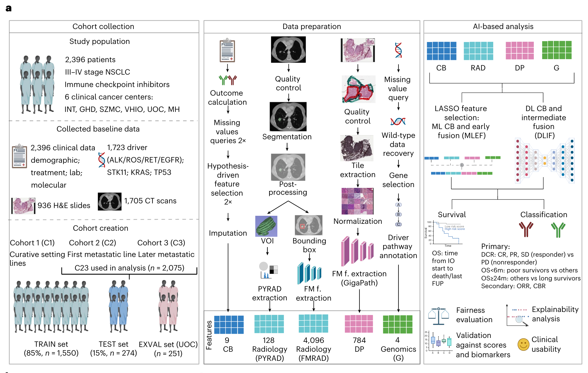

三分鐘看懂這篇論文
一句話
這篇研究想做一個「AI 小幫手」，在肺癌病人打昂貴的免疫治療之前，先幫醫師猜這個人會不會有效，而且要把理由講給醫師聽。
故事從哪裡開始
- 晚期肺癌現在常用「免疫治療」：不是直接殺癌細胞，而是解開免疫系統的煞車，讓身體自己去打癌細胞。介紹見 非小細胞肺癌與免疫治療。
- 麻煩在於：只有少數人能長期受益，有效的比例是兩到三成 prelaj2026 p.1。
- 目前醫師主要看一個叫 PD-L1 的檢驗值來決定，但它不太準 prelaj2026 p.1。見 生物標記。
- 所以研究團隊想：如果把抽血、CT、病理切片、基因全部丟給 AI，會不會比只看 PD-L1 準？
他們怎麼做
- 收集六個國家、2,396 位病人的資料 prelaj2026 p.1。
- 像考試一樣分三份：大部分給 AI「上課」（訓練），一部分當「模擬考」（測試），最後拿美國另一家醫院的病人當「真正的大考」（外部驗證）prelaj2026 p.2。比喻見 訓練、交叉驗證、測試與外部驗證。
- 試了兩類 AI：比較傳統的機器學習，以及深度學習 prelaj2026 p.2。見 機器學習、深度學習與 logistic regression。
- 把 AI 的理由畫成 SHAP 圖，讓醫師看得懂 prelaj2026 p.6。見 SHAP。

結果，用白話說
- 只用常規抽血與病歷資料，AI 就比只看 PD-L1 準。 預測能不能活過兩年，AI 的 AUC 是 0.74，PD-L1 只有 0.53 prelaj2026 p.6。AUC 見 AUC 與 C-index。
- 再加 CT、病理、基因，沒有穩定變得更準。 在「上課」時看起來有進步，到「模擬考」卻沒有一致重現 prelaj2026 p.5。見 資料越多越準？多模態的進步沒有重現。
- 換到美國的醫院，分數掉了。 預測兩年存活的 AUC 從 0.74 降到 0.60 prelaj2026 p.2。見 換一家醫院，AI 就變笨了？外部驗證的掉分。
- 醫師看了 AI 的解釋，判斷變好了。 找出「會有效的人」的能力（敏感度）從 0.72 升到 0.87 prelaj2026 p.6。見 敏感度、特異度、準確度與 kappa。
- 但專家有時會被 AI 帶著走。 AI 給錯建議時，專家照著改的比例是 72.2%，比非專家的 63.6% 還高 prelaj2026 p.7。見 自動化偏誤。
為什麼值得讀
- 很多醫療 AI 論文只報告「模型分數多高」。這篇多走了一步：真的找醫師來試用，看人加上 AI 會不會更好。
- 它也誠實寫出做不好的部分（多模態沒贏、外部驗證掉分），這對想做醫療 AI 的人很有參考價值。
相關頁面
論文頁 AI 能不能幫醫師判斷誰適合免疫治療？I3LUNG 研究；先讀觀念 非小細胞肺癌與免疫治療 → 生物標記 → AUC 與 C-index → SHAP；議題 醫師變準了，是 AI 的功勞嗎？可用性研究的設計限制、「預測療效」還是「預估預後」？。